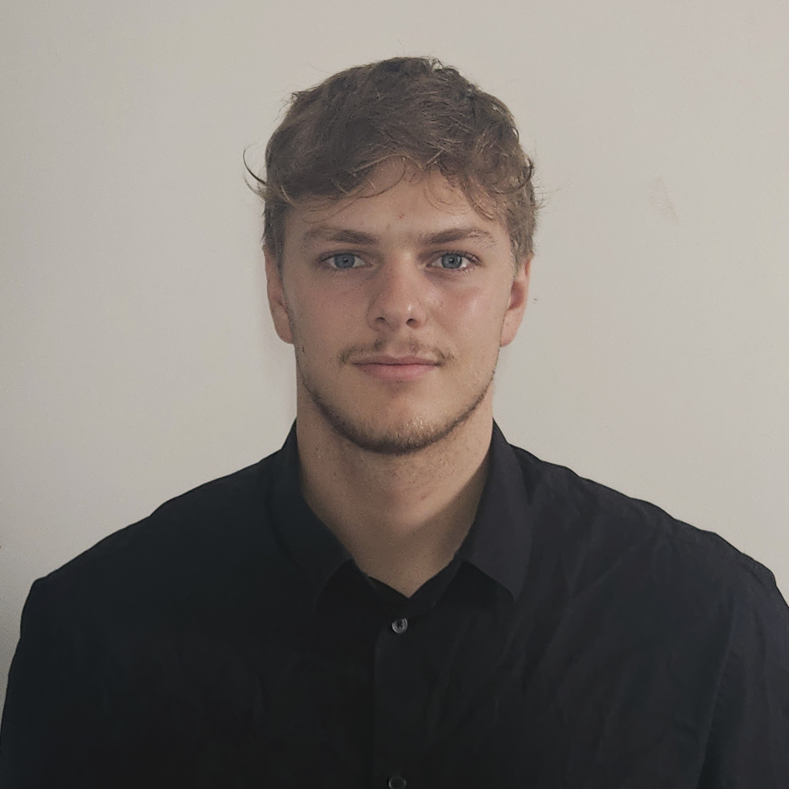

Génération procédurale
Un projet mettant en œuvre mes compétences en programmation et en conception logicielle.

Hugo Béliveau
ÉTUDIANT INGÉNIEUR · ESISAR
Passionné par l'informatique, la robotique et les systèmes intelligents, je transforme des idées en projets concrets.
Découvrir mes projets ↗01 — Quelques projets à l'affiche
Quelques projets qui illustrent mes compétences.
Un projet mettant en œuvre mes compétences en programmation et en conception logicielle.

Un système conçu pour expérimenter l'interaction entre logiciel et matériel.

Une exploration de méthodes permettant de résoudre un problème concret.
02 — À PROPOS
Actuellement en deuxième année de cycle préparatoire à l’ESISAR - Grenoble INP, je développe mes compétences en informatique, en électronique et en systèmes intelligents. Passionné par la programmation depuis le collège, j’ai découvert la robotique au lycée, une expérience qui a progressivement orienté mon projet professionnel vers les systèmes embarqués, à la croisée du logiciel et du matériel.
J’aime analyser un problème dans sa globalité, en comprendre les mécanismes, puis expérimenter différentes approches pour aboutir à une solution concrète. Je privilégie les projets qui associent rigueur scientifique, programmation et mise en œuvre technique, avec une attention particulière portée à la compréhension du système dans son ensemble.
La robotique occupe une place importante dans mes projets
personnels. Je suis notamment responsable du projet de robot
sumo au club robotique de l’ESISAR. Je m’investis également
dans la vie étudiante en tant que secrétaire du club de sport.
L’aviron, que j’ai pratiqué à haut niveau et dans lequel j’ai
obtenu plusieurs titres nationaux, m’a transmis le goût de
l’effort, de la régularité et du travail collectif.
Enfin, la vulgarisation scientifique occupe une place particulière
dans mon parcours. J’ai beaucoup appris en autonomie grâce à des
ressources en ligne, notamment des vidéos consacrées à
l’informatique, à l’électronique et à l’ingénierie. À terme,
j’aimerais à mon tour rendre ces sujets accessibles au plus grand
nombre en créant du contenu de vulgarisation sur YouTube.
03 — PARCOURS
ROBOTIQUE · CONCEPTION · PROGRAMMATION · MODÉLISATION
FIRST Tech Challenge France · Lycée Institution Notre-Dame de Valence
FIRST Tech Challenge France · Lycée Institution Notre-Dame de Valence
SCIENCES · INGÉNIERIE · SPORT
Étudiant menant un double cursus de sportif de haut niveau avec aménagement d'études avec Grenoble INP
Lauréat du prix STEM for ALL de Thales Solidarity.
SPORT · DISCIPLINE · COLLECTIF
Membre de la sélection 2024 du Comité Départemental Olympique et Sportif en tant qu'espoir en aviron
Membre de la sélection 2025 de l'Office des Sports Valentinois en tant qu'espoir en aviron
Titre de vice Champion de France en deux de couple masculin en J16
Vainqueur de la Coupe de France des Régions avec l'équipe Auvergne Rhône Alpes en quatre de couple mixte J18
Titre de Champion de France FFSU en deux de couple mixte
ENTREPRISES · ENTREPRENARIAT
Missions consistant au montage et réglage de portes de placard coulissantes, contrôle de qualité et manutention.
Cours de Mathématiques, Numérique et Science Informatiques à des élèves entre la seconde et la terminale.
Montage et assemblage de structures aluminium à partir de plans techniques, découpe de profilés sur machine de production, raccordements électriques et tests fonctionnels, contrôle qualité, conditionnement, logistique et installation d'équipements sur site client.
Je suis ouvert aux échanges autour de l'ingénierie, de la robotique et de l'informatique.
Me contacter ↗